目录
本文是对c#中Dictionary内部实现原理进行简单的剖析。如有表述错误，欢迎指正。
主要对照源码来解析，目前对照源码的版本是.Net Framwork 4.8，源码地址。
1. 关键的字段和Entry结构
struct Entry
{
public int hashCode; // key的hashCode & 0x7FFFFFFF
public int next; // 指向链表下一个元素的地址（实际就是entries的索引），最后一个元素为-1
public TKey key;
public TValue value;
}
Entry[] entries; //存放键值
int[] buckets; //存储entries最新元素的索引,其存储位置由取模结果决定。例：假设键值存储在entries的第1元素的位置上，且hashCode和长度的取模结果为2，那么buckets[2] = 1
int count = 0; //已存储键值的个数
int version; //记录版本，防止迭代过程中集合被更改
IEqualityComparer<TKey> _comparer;
int freeList; //entries中最新空元素的索引
int freeCount; //entries中空元素的个数2. 添加键值（Add）
public void Add(TKey key, TValue value) {
Insert(key, value, true);
}
private void Insert(TKey key, TValue value, bool add) {
if( key == null ) {
ThrowHelper.ThrowArgumentNullException(ExceptionArgument.key);
}
if (buckets == null) Initialize(0);
int hashCode = comparer.GetHashCode(key) & 0x7FFFFFFF;
//取模
int targetBucket = hashCode % buckets.Length;
#if FEATURE_RANDOMIZED_STRING_HASHING
int collisionCount = 0;
#endif
for (int i = buckets[targetBucket]; i >= 0; i = entries[i].next) {
if (entries[i].hashCode == hashCode && comparer.Equals(entries[i].key, key)) {
if (add) {
ThrowHelper.ThrowArgumentException(ExceptionResource.Argument_AddingDuplicate);
}
//对于已存在的Key重新赋值
entries[i].value = value;
version++;
return;
}
#if FEATURE_RANDOMIZED_STRING_HASHING
collisionCount++;
#endif
}
int index;
if (freeCount > 0) {
//存在entries中存在空元素
index = freeList;
freeList = entries[index].next;
freeCount--;
}
else {
if (count == entries.Length)
{
//扩容：取大于count * 2的最小素数作为entries和bucket的新容量（即数组长度.Length）
Resize();
targetBucket = hashCode % buckets.Length;
}
index = count;
count++;
}
entries[index].hashCode = hashCode;
entries[index].next = buckets[targetBucket];
entries[index].key = key;
entries[index].value = value;
//存取链表的头元素的索引（即entries最后存入的元素的在enties中的索引）
//便于取Key的时每次从链表的头元素开始遍历，详细见FindEntry(TKey key)函数
buckets[targetBucket] = index;
version++;
#if FEATURE_RANDOMIZED_STRING_HASHING
#if FEATURE_CORECLR
// In case we hit the collision threshold we'll need to switch to the comparer which is using randomized string hashing
// in this case will be EqualityComparer<string>.Default.
// Note, randomized string hashing is turned on by default on coreclr so EqualityComparer<string>.Default will
// be using randomized string hashing
if (collisionCount > HashHelpers.HashCollisionThreshold && comparer == NonRandomizedStringEqualityComparer.Default)
{
comparer = (IEqualityComparer<TKey>) EqualityComparer<string>.Default;
Resize(entries.Length, true);
}
#else
if(collisionCount > HashHelpers.HashCollisionThreshold && HashHelpers.IsWellKnownEqualityComparer(comparer))
{
//如果碰撞次数（单链表长度）大于设置的最大碰撞阈值，需要扩容
comparer = (IEqualityComparer<TKey>) HashHelpers.GetRandomizedEqualityComparer(comparer);
Resize(entries.Length, true);
}
#endif // FEATURE_CORECLR
#endif
}
******************************************************************************************************************************************
static void Foo()
{
var dicData = new Dictionary<int, int>();
//添加键值
new List<int> { 1, 2, 4 }.ForEach(item => Add(item, dicData));
new List<int> { 22, 29, 36, 20 }.ForEach(item => Add(item, dicData));
}
static void Add(int key, Dictionary<int, int> dicData)
{
dicData.Add(key, key);
}2.1 数组entries和buckets初始化
private void Initialize(int capacity) {
//取大于capacity的最小质数（素数）
int size = HashHelpers.GetPrime(capacity);
buckets = new int[size];
for (int i = 0; i < buckets.Length; i++) buckets[i] = -1;
entries = new Entry[size];
freeList = -1;
}
****************************************************
internal static class HashHelpers
{
......
public const int HashCollisionThreshold = 100; //碰撞阈值
......
public static readonly int[] primes = {
3, 7, 11, 17, 23, 29, 37, 47, 59, 71, 89, 107, 131, 163, 197, 239, 293, 353, 431, 521, 631, 761, 919,
1103, 1327, 1597, 1931, 2333, 2801, 3371, 4049, 4861, 5839, 7013, 8419, 10103, 12143, 14591,
17519, 21023, 25229, 30293, 36353, 43627, 52361, 62851, 75431, 90523, 108631, 130363, 156437,
187751, 225307, 270371, 324449, 389357, 467237, 560689, 672827, 807403, 968897, 1162687, 1395263,
1674319, 2009191, 2411033, 2893249, 3471899, 4166287, 4999559, 5999471, 7199369}; //质数（素数）组
......
public static int GetPrime(int min)
{
if (min < 0)
throw new ArgumentException(Environment.GetResourceString("Arg_HTCapacityOverflow"));
Contract.EndContractBlock();
//查找primes是否有满足的质数（素数）
for (int i = 0; i < primes.Length; i++)
{
int prime = primes[i];
if (prime >= min) return prime;
}
//outside of our predefined table.
//compute the hard way.
//primes没有查找到满足的质数（素数），自行计算
for (int i = (min | 1); i < Int32.MaxValue;i+=2)
{
if (IsPrime(i) && ((i - 1) % Hashtable.HashPrime != 0))
return i;
}
return min;
}
}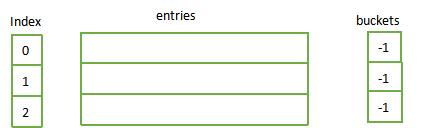
2.2 添加键值{1，1}，则
hashCode = 1;
targetBucket = hasCode % buckets.Length; //targetBucket = 1
next = buckets[targetBucket]; //next = -1
buckets[targetBucket] = index; //buckets[1] = 0 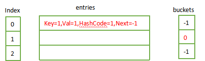
2.3 添加键值{2，2}，则
hashCode = 2;
targetBucket = hasCode % buckets.Length; //targetBucket = 2
next = buckets[targetBucket]; //next = -1
buckets[targetBucket] = index; //buckets[2] = 1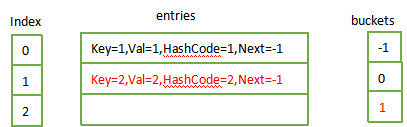
2.4 添加键值{4，4}，则
hashCode = 4;
targetBucket = hasCode % buckets.Length; //targetBucket = 1
next = buckets[targetBucket]; //next = 0
buckets[targetBucket] = index; //buckets[1] = 2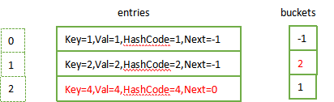
接下来将entries数组以单链表的形式呈现(即enteries数组横向)；
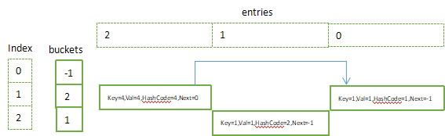
2.5 在继续添加键值之前，需要扩容操作，因为entries数组长度为3且都已有元素。扩容后需要对buckets和entries每个元素的Next需要重新赋值；
private void Resize() {
//扩容的大小：取大于（当前容量*2）的最小素数
//例：
Resize(HashHelpers.ExpandPrime(count), false);
}
private void Resize(int newSize, bool forceNewHashCodes) {
Contract.Assert(newSize >= entries.Length);
//实例化buckets，并将每个元素置为-1
int[] newBuckets = new int[newSize];
for (int i = 0; i < newBuckets.Length; i++) newBuckets[i] = -1;
Entry[] newEntries = new Entry[newSize];
Array.Copy(entries, 0, newEntries, 0, count);
//如果是Hash碰撞扩容，使用新HashCode函数重新计算Hash值
if(forceNewHashCodes) {
for (int i = 0; i < count; i++) {
if(newEntries[i].hashCode != -1) {
newEntries[i].hashCode = (comparer.GetHashCode(newEntries[i].key) & 0x7FFFFFFF);
}
}
}
//重建单链表
for (int i = 0; i < count; i++) {
if (newEntries[i].hashCode >= 0) {
//取模重新设置next值和buckets
int bucket = newEntries[i].hashCode % newSize;
newEntries[i].next = newBuckets[bucket];
newBuckets[bucket] = i;
}
}
buckets = newBuckets;
entries = newEntries;
}
*******************************************************************
internal static class HashHelpers
{
......
public static readonly int[] primes = {
3, 7, 11, 17, 23, 29, 37, 47, 59, 71, 89, 107, 131, 163, 197, 239, 293, 353, 431, 521, 631, 761, 919,
1103, 1327, 1597, 1931, 2333, 2801, 3371, 4049, 4861, 5839, 7013, 8419, 10103, 12143, 14591,
17519, 21023, 25229, 30293, 36353, 43627, 52361, 62851, 75431, 90523, 108631, 130363, 156437,
187751, 225307, 270371, 324449, 389357, 467237, 560689, 672827, 807403, 968897, 1162687, 1395263,
1674319, 2009191, 2411033, 2893249, 3471899, 4166287, 4999559, 5999471, 7199369}; //质数（素数）组
......
// This is the maximum prime smaller than Array.MaxArrayLength
public const int MaxPrimeArrayLength = 0x7FEFFFFD; //数组最大长度的最小质数
public static int ExpandPrime(int oldSize)
{
//翻倍
int newSize = 2 * oldSize;
// Allow the hashtables to grow to maximum possible size (~2G elements) before encoutering capacity overflow.
// Note that this check works even when _items.Length overflowed thanks to the (uint) cast
//翻倍的大小不能超过【数组最大长度的最小质数】
if ((uint)newSize > MaxPrimeArrayLength && MaxPrimeArrayLength > oldSize)
{
Contract.Assert( MaxPrimeArrayLength == GetPrime(MaxPrimeArrayLength), "Invalid MaxPrimeArrayLength");
return MaxPrimeArrayLength;
}
//取最小的质数（素数）
return GetPrime(newSize);
}
public static int GetPrime(int min)
{
if (min < 0)
throw new ArgumentException(Environment.GetResourceString("Arg_HTCapacityOverflow"));
Contract.EndContractBlock();
//查找primes是否有满足的质数（素数）
for (int i = 0; i < primes.Length; i++)
{
int prime = primes[i];
if (prime >= min) return prime;
}
//outside of our predefined table.
//compute the hard way.
//primes没有查找到满足的质数（素数），自行计算
for (int i = (min | 1); i < Int32.MaxValue;i+=2)
{
if (IsPrime(i) && ((i - 1) % Hashtable.HashPrime != 0))
return i;
}
return min;
}
}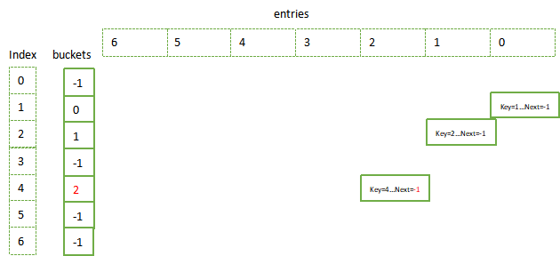
2.6 继续添加键值{22，22}，{29，29}，{36，36}，{40，40}，添加完后其内部存储结果如下
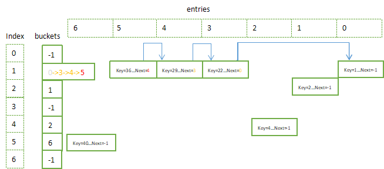
3. 取键值（Find）
public TValue this[TKey key] {
get {
//取Key对应值在entries的索引
int i = FindEntry(key);
if (i >= 0) return entries[i].value;
ThrowHelper.ThrowKeyNotFoundException();
return default(TValue);
}
set {
//更新Key对应的值
Insert(key, value, false);
}
}
private int FindEntry(TKey key) {
if( key == null) {
ThrowHelper.ThrowArgumentNullException(ExceptionArgument.key);
}
if (buckets != null) {
int hashCode = comparer.GetHashCode(key) & 0x7FFFFFFF;
//遍历单链表
for (int i = buckets[hashCode % buckets.Length]; i >= 0; i = entries[i].next) {
if (entries[i].hashCode == hashCode && comparer.Equals(entries[i].key, key)) return i;
}
}
return -1;
}
*********************************************************************************************
static void Foo()
{
......
//取Key=22
var val =dicData[22];
}简化取Key对应值的代码
var hashCode =comparer.GetHashCode(key) & 0x7FFFFFFF; // 22
var targetBuget = hashCode % buckets.Length; //取模运算 1
var i = bucket[targetBuget]; //链表头元素的索引 bucket[1] = 5
//遍历单链表
for (; i >= 0; i = entries[i].next) {
if (entries[i].hashCode == hashCode && comparer.Equals(entries[i].key, key)) return i;
}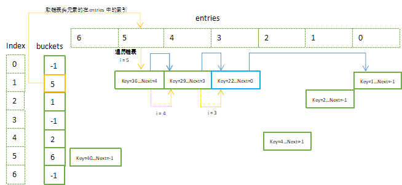
4. 移除键值（Remove）
public bool Remove(TKey key) {
if(key == null) {
ThrowHelper.ThrowArgumentNullException(ExceptionArgument.key);
}
if (buckets != null) {
int hashCode = comparer.GetHashCode(key) & 0x7FFFFFFF;
int bucket = hashCode % buckets.Length;
int last = -1;
//其原理先取出键值，然后记录entries空闲的索引（freeList）和空闲个数（freeCount）
for (int i = buckets[bucket]; i >= 0; last = i, i = entries[i].next) {
if (entries[i].hashCode == hashCode && comparer.Equals(entries[i].key, key)) {
if (last < 0) {
buckets[bucket] = entries[i].next;
}
else {
entries[last].next = entries[i].next;
}
entries[i].hashCode = -1;
//建立空闲链表
entries[i].next = freeList;
entries[i].key = default(TKey);
entries[i].value = default(TValue);
//保存entryies中空元素的索引
//便于插入新键值时，放在当前索引的位置，减少entryies空间上的浪费
freeList = i;
//空元素的个数加1
freeCount++;
version++;
return true;
}
}
}
return false;
}
*******************************************************************
static void Foo()
{
......
//移除
new List<int> { 22, 29 }.ForEach(item => dicData.Remove(item));
} 4.1 移除Key=22后，freeList = 3, freeCount = 1,
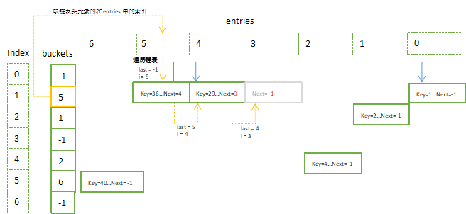
4.2 移除Key=36后，freeList = 5, freeCount = 2,
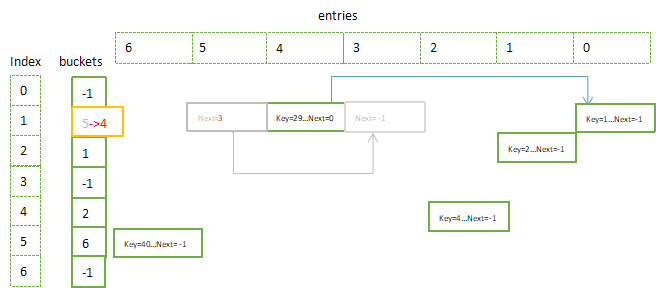
5. 再插入键值
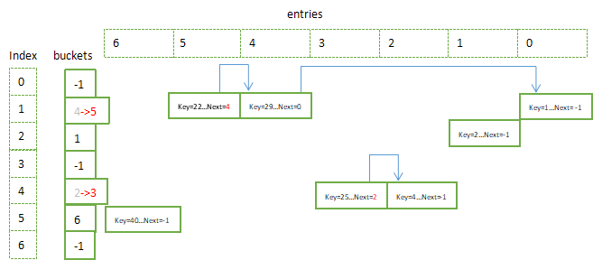
希望此文能够让你对于Dictionary内部实现有所认识。